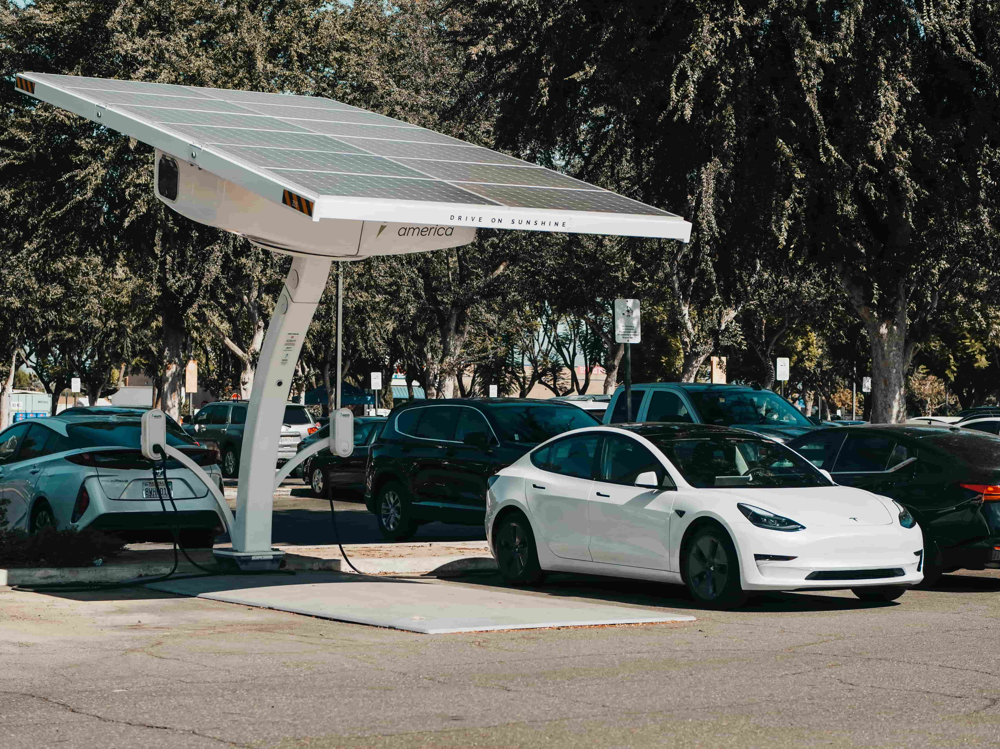
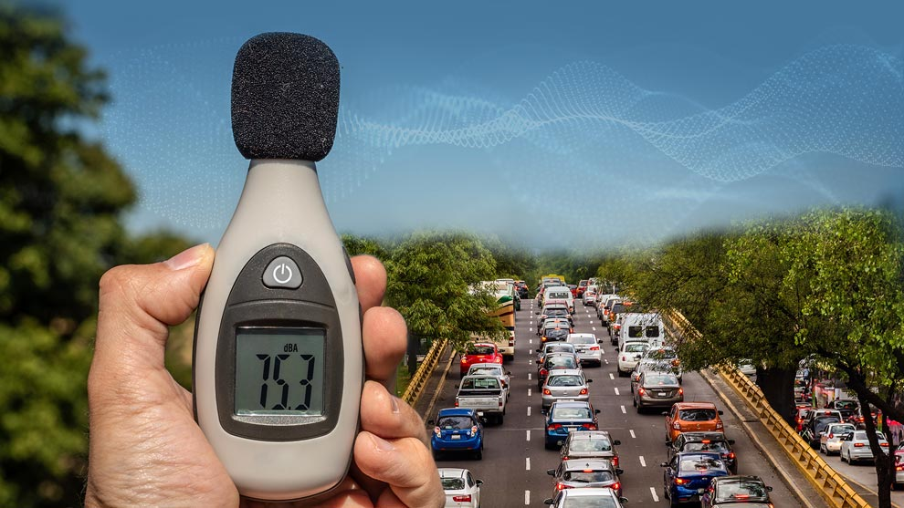
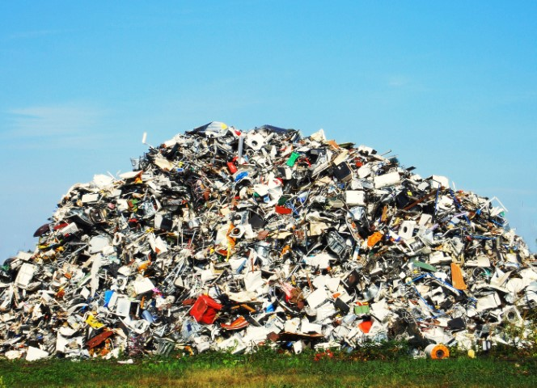

IMPACTO POSITIVO DEL TRANSPORTE TECNOLÓGICO
La evolución del transporte ha traído consigo avances tecnológicos que han permitido reducir la contaminación y mejorar la eficiencia energética. Algunos de los beneficios incluyen:
- Vehículos eléctricos: Disminuyen las emisiones de CO₂ y reducen la dependencia de combustibles fósiles.
- Uso de energías renovables: Transportes impulsados por energía solar e hidrógeno están emergiendo como alternativas ecológicas.
- Reducción de contaminación acústica: Los motores eléctricos producen menos ruido que los de combustión interna, mejorando la calidad de vida en ciudades.
- Optimización de rutas con IA: Los sistemas de navegación avanzada reducen el tiempo de viaje y el consumo de combustible.
- Transporte compartido y autónomo: Favorece un menor número de vehículos en circulación y una mayor eficiencia en el uso de recursos.



IMPACTO NEGATIVO DEL TRANSPORTE TECNOLÓGICO
A pesar de los avances, la tecnología en el transporte también tiene consecuencias ambientales significativas. Entre ellas:
- Extracción de recursos naturales: La producción de baterías requiere minerales como el litio y el cobalto, cuya extracción puede dañar ecosistemas.
- Generación de residuos electrónicos: La vida útil de baterías y dispositivos electrónicos genera toneladas de desechos difíciles de reciclar.
- Emisiones indirectas: La producción de electricidad para cargar vehículos eléctricos sigue dependiendo en gran parte de combustibles fósiles.
- Incremento de la demanda energetica El uso masivo de vehículos eléctricos y otras formas de transporte tecnológico podría aumentar la demanda de electricidad, lo que, si no se acompaña de una transición hacia energías renovables, puede generar más impactos negativos sobre el medio ambiente.
- Obsolescencia programada: La rápida evolución tecnológica puede generar un alto índice de desechos de vehículos y componentes obsoletos.

